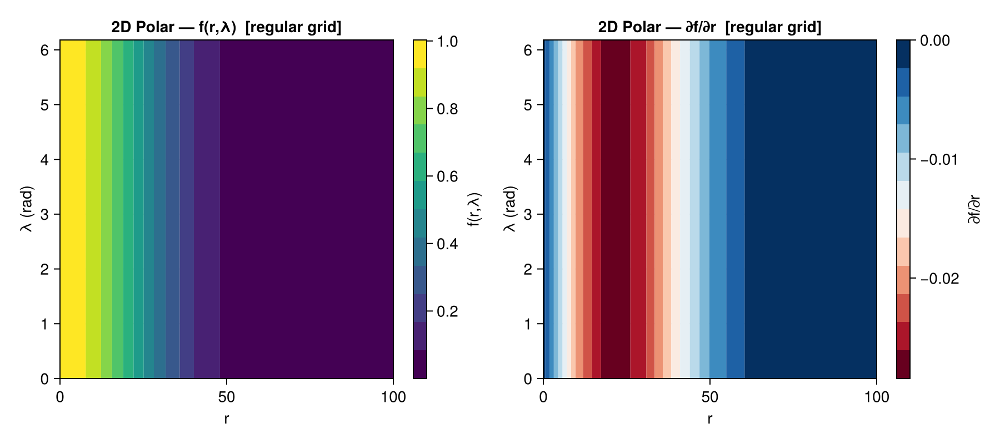
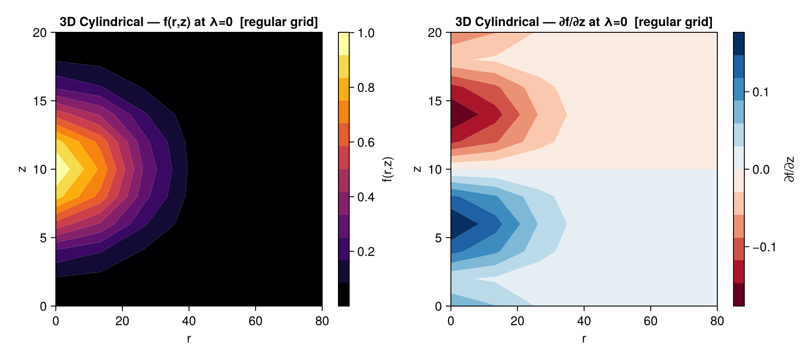
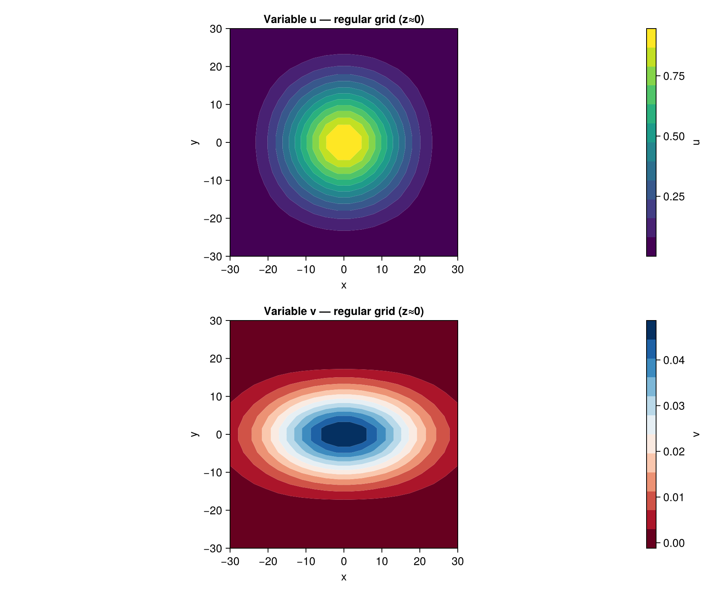
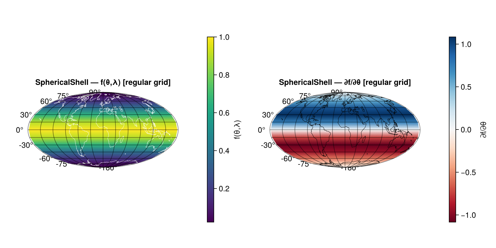
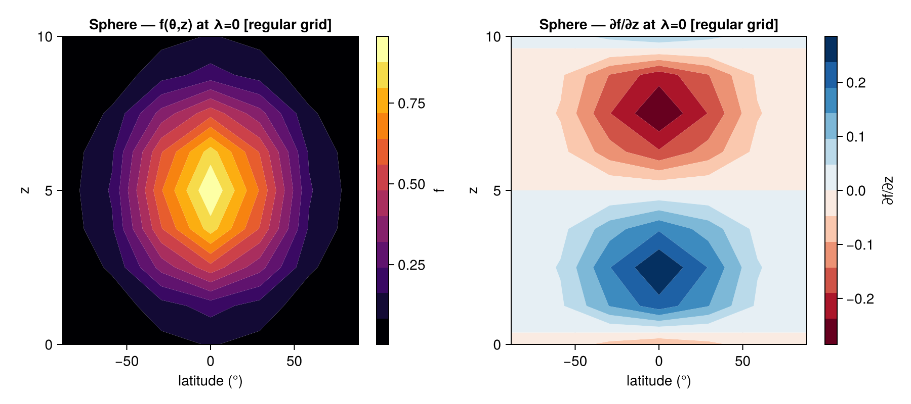
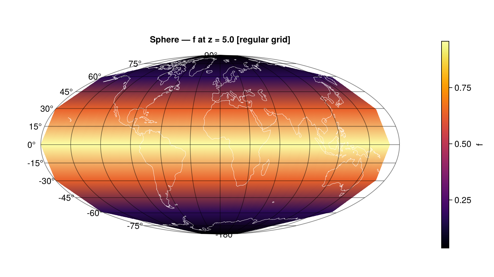

Tutorial
This tutorial demonstrates Springsteel's core workflow through six examples of increasing complexity. Each example creates a grid, fills it with a Gaussian function, performs a forward (physical → spectral) and inverse (spectral → physical) round-trip transform, and examines the results.
A companion Jupyter notebook with visualizations is available at notebooks/Springsteel_tutorial.ipynb.
Example 1 — 1D Spline Grid
The simplest Springsteel grid uses cubic B-splines in a single dimension.
Creating the grid
Use SpringsteelGridParameters to configure the grid, then createGrid to build it:
using Springsteel
gp = SpringsteelGridParameters(
geometry = "R", # 1D radial/Cartesian
iMin = -50.0, # domain left bound
iMax = 50.0, # domain right bound
num_cells = 30, # B-spline cells (iDim = 30 × 3 = 90 gridpoints)
BCL = Dict("gauss" => CubicBSpline.R0), # left BC: free boundary (rank-0, no constraint)
BCR = Dict("gauss" => CubicBSpline.R0), # right BC: free boundary (rank-0, no constraint)
vars = Dict("gauss" => 1) # one variable
)
grid = createGrid(gp)The result is a SpringsteelGrid{CartesianGeometry, SplineBasisArray, NoBasisArray, NoBasisArray}, which can also be referred to by the type alias R_Grid.
Physical array dimensions: (iDim, n_vars, 3) — the third dimension holds [f, ∂f/∂x, ∂²f/∂x²].
Filling the grid
Use getGridpoints to retrieve the physical gridpoint coordinates:
pts = getGridpoints(grid) # Vector{Float64} of length iDim
σ = 10.0
for i in eachindex(pts)
grid.physical[i, 1, 1] = exp(-(pts[i] / σ)^2)
endRound-trip transform
spectralTransform!(grid) # physical → spectral coefficients
gridTransform!(grid) # spectral → physical + derivatives
# Check accuracy
original = exp.(-(pts ./ σ).^2)
max_error = maximum(abs.(grid.physical[:, 1, 1] .- original))
# max_error ≈ 1e-6 for 30 cellsAfter gridTransform!, the derivatives are available:
grid.physical[:, 1, 2]— first derivative ∂f/∂xgrid.physical[:, 1, 3]— second derivative ∂²f/∂x²
Boundary conditions
BC constants follow the Ooyama (2002) rank–type naming convention, defined in the CubicBSpline module. The rank is the number of constraints removed at the boundary; the type identifies which derivative is constrained (T0 = value, T1 = first derivative, T2 = second derivative):
| Constant | Ooyama Eq. | Mathematical condition |
|---|---|---|
CubicBSpline.R0 | 3.2a | No constraint (free boundary) |
CubicBSpline.R1T0 | 3.2b | $u(x_0) = 0$ (Dirichlet) |
CubicBSpline.R1T1 | 3.2c | $u'(x_0) = 0$ (Neumann) |
CubicBSpline.R1T2 | 3.2d | $u''(x_0) = 0$ |
CubicBSpline.R2T10 | 3.2f | $u(x_0) = u'(x_0) = 0$ (symmetric reflection) |
CubicBSpline.R2T20 | 3.2g | $u(x_0) = u''(x_0) = 0$ (antisymmetric reflection) |
CubicBSpline.R3 | 3.2h | $u = u' = u'' = 0$ at boundary |
CubicBSpline.PERIODIC | §3e | Periodic (cyclically continuous) domain |
Example 2 — 2D Polar Grid (Spline × Fourier)
A cylindrical ("RL") grid uses B-splines in the radial direction and Fourier series in azimuth.
Key features
- Each radial ring has a different number of azimuthal gridpoints:
lpoints = 4 + 4rᵢ, whererᵢ = r + patchOffsetL. This avoids over-resolving near the center. - Fourier BCs are always periodic (set automatically).
- The physical array has 5 derivative slots:
[f, ∂f/∂r, ∂²f/∂r², ∂f/∂λ, ∂²f/∂λ²].
Grid creation
gp_rl = SpringsteelGridParameters(
geometry = "RL",
iMin = 0.0,
iMax = 100.0,
num_cells = 10,
vars = Dict("gauss" => 1),
BCL = Dict("gauss" => CubicBSpline.R0),
BCR = Dict("gauss" => CubicBSpline.R0)
)
grid_rl = createGrid(gp_rl) # RL_GridFilling the grid
For cylindrical grids, gridpoints are packed by ring. Loop over radial indices, compute ring sizes, and fill sequentially:
σ = 30.0
iDim = grid_rl.params.iDim
g = 1
for r in 1:iDim
ri = r + grid_rl.params.patchOffsetL
lpoints = 4 + 4 * ri
r_val = grid_rl.ibasis.data[1, 1].mishPoints[r]
val = exp(-(r_val / σ)^2)
for l in 1:lpoints
grid_rl.physical[g, 1, 1] = val
g += 1
end
endRound-trip and gridpoints
original = copy(grid_rl.physical[:, 1, 1])
spectralTransform!(grid_rl)
gridTransform!(grid_rl)
max_error = maximum(abs.(grid_rl.physical[:, 1, 1] .- original))
# getGridpoints returns an (N, 2) matrix: columns are [r, λ]
pts_rl = getGridpoints(grid_rl)Evaluating on a regular grid
The cylindrical mish-point layout has irregular spacing (different lpoints per ring). Use regularGridTransform to evaluate the spectral representation on a uniform (r, λ) grid — ideal for plotting or intercomparison:
# Default regular grid (uniform r × λ tensor-product grid)
reg_pts = getRegularGridpoints(grid_rl) # (N, 2) → columns [r, λ]
reg_vals = regularGridTransform(grid_rl, reg_pts) # (N, num_vars, 5)
# Or specify custom output points:
r_out = collect(range(0.0, 100.0, length=50))
λ_out = collect(range(0.0, 2π, length=72))
custom_vals = regularGridTransform(grid_rl, r_out, λ_out)The returned array has the same derivative slots as physical: [f, ∂f/∂r, ∂²f/∂r², ∂f/∂λ, ∂²f/∂λ²].
Reshape note: Output is stored with λ varying fastest. To obtain a (n_r × n_λ) matrix M such that M[i,j] = f(r_i, λ_j), use Julia's column-major reshape:
n_r = grid_rl.params.i_regular_out
n_λ = grid_rl.params.j_regular_out
f_matrix = permutedims(reshape(reg_vals[:, 1, 1], n_λ, n_r)) # (n_r × n_λ)This matrix can then be passed directly to contourf for scientific figures:
r_reg = collect(LinRange(gp_rl.iMin, gp_rl.iMax, n_r))
λ_reg = [2π*(j-1)/n_λ for j in 1:n_λ]
contourf(ax, r_reg, λ_reg, f_matrix; colormap=:viridis, levels=12)See the companion notebook for complete visualization examples including saved figures.

Left: field values f(r,λ) on the regular grid. Right: radial derivative ∂f/∂r.Example 3 — 3D Cylindrical Grid (Spline × Fourier × Chebyshev)
The RLZ grid combines all three basis types.
Key features
- Chebyshev parameters:
kMin,kMaxset the vertical domain;kDimis the number of Chebyshev gridpoints. - The physical array has 7 derivative slots:
[f, ∂f/∂r, ∂²f/∂r², ∂f/∂λ, ∂²f/∂λ², ∂f/∂z, ∂²f/∂z²]. - Physical indexing: for each radius
r,lpointsazimuthal points, each withkDimvertical points packed sequentially.
Grid creation
gp_rlz = SpringsteelGridParameters(
geometry = "RLZ",
iMin = 0.0,
iMax = 80.0,
num_cells = 6,
kMin = 0.0,
kMax = 20.0,
kDim = 10,
vars = Dict("gauss" => 1),
BCL = Dict("gauss" => CubicBSpline.R0),
BCR = Dict("gauss" => CubicBSpline.R0),
BCB = Dict("gauss" => Chebyshev.R0),
BCT = Dict("gauss" => Chebyshev.R0)
)
grid_rlz = createGrid(gp_rlz) # RLZ_GridFilling the grid
σ_r = 25.0; σ_z = 5.0
z₀ = (gp_rlz.kMin + gp_rlz.kMax) / 2
iDim = grid_rlz.params.iDim
kDim = grid_rlz.params.kDim
idx = 1
for r in 1:iDim
ri = r + grid_rlz.params.patchOffsetL
lpoints = 4 + 4 * ri
r_val = grid_rlz.ibasis.data[1, 1].mishPoints[r]
for l in 1:lpoints
for z in 1:kDim
z_val = grid_rlz.kbasis.data[1].mishPoints[z]
grid_rlz.physical[idx, 1, 1] = exp(-(r_val/σ_r)^2 - ((z_val - z₀)/σ_z)^2)
idx += 1
end
end
endRound-trip
original = copy(grid_rlz.physical[:, 1, 1])
spectralTransform!(grid_rlz)
gridTransform!(grid_rlz)
max_error = maximum(abs.(grid_rlz.physical[:, 1, 1] .- original))Evaluating on a regular grid
reg_pts = getRegularGridpoints(grid_rlz) # (N, 3) → columns [r, λ, z]
reg_vals = regularGridTransform(grid_rlz, reg_pts) # (N, num_vars, 7)
# Custom output grid
r_out = collect(range(0.0, 80.0, length=40))
λ_out = collect(range(0.0, 2π, length=36))
z_out = collect(range(0.0, 20.0, length=20))
custom_vals = regularGridTransform(grid_rlz, r_out, λ_out, z_out)The returned array has 7 derivative slots: [f, ∂f/∂r, ∂²f/∂r², ∂f/∂λ, ∂²f/∂λ², ∂f/∂z, ∂²f/∂z²].
To extract an (r, z) cross-section at a fixed λ-index for contour plotting:
n_r = grid_rlz.params.i_regular_out
n_λ = grid_rlz.params.j_regular_out
n_z = grid_rlz.params.k_regular_out
# λ_idx = 1 (first point, λ = 0)
# flat = (ri-1)*n_λ*n_z + (λ_idx-1)*n_z + zi
f_rz = [reg_vals[(ri-1)*n_λ*n_z + zi, 1, 1] for ri in 1:n_r, zi in 1:n_z]
r_reg = collect(LinRange(gp_rlz.iMin, gp_rlz.iMax, n_r))
z_reg = collect(LinRange(gp_rlz.kMin, gp_rlz.kMax, n_z))
contourf(ax, r_reg, z_reg, f_rz; colormap=:inferno, levels=12)
Left: f(r,z) at λ=0. Right: vertical derivative ∂f/∂z.Example 4 — 3D Cartesian Grid (Spline × Spline × Spline) with Two Variables
The RRR grid uses cubic B-splines in all three dimensions.
Key features
- BCs are needed for all three directions:
BCL/BCR(i),BCU/BCD(j),BCB/BCT(k). - Physical indexing:
flat = (i-1)*jDim*kDim + (j-1)*kDim + k. - Multiple variables: assign each a unique integer index in
vars.
Grid creation with two variables
gp_rrr = SpringsteelGridParameters(
geometry = "RRR",
iMin = -30.0, iMax = 30.0,
jMin = -30.0, jMax = 30.0,
kMin = -30.0, kMax = 30.0,
num_cells = 6,
vars = Dict("u" => 1, "v" => 2),
BCL = Dict("u" => CubicBSpline.R0, "v" => CubicBSpline.R0),
BCR = Dict("u" => CubicBSpline.R0, "v" => CubicBSpline.R0),
BCU = Dict("u" => CubicBSpline.R0, "v" => CubicBSpline.R0),
BCD = Dict("u" => CubicBSpline.R0, "v" => CubicBSpline.R0),
BCB = Dict("u" => CubicBSpline.R0, "v" => CubicBSpline.R0),
BCT = Dict("u" => CubicBSpline.R0, "v" => CubicBSpline.R0)
)
grid_rrr = createGrid(gp_rrr) # RRR_Grid — 2 variables, 7 derivative slots eachFilling multiple variables
getGridpoints returns an (N, 3) matrix for 3D Cartesian grids:
pts = getGridpoints(grid_rrr) # (N, 3) → columns [x, y, z]
σ_iso = 15.0; σ_x = 20.0; σ_y = 10.0
for i in 1:size(pts, 1)
x, y, z = pts[i, 1], pts[i, 2], pts[i, 3]
grid_rrr.physical[i, 1, 1] = exp(-(x^2 + y^2 + z^2) / σ_iso^2)
grid_rrr.physical[i, 2, 1] = exp(-x^2/σ_x^2 - y^2/σ_y^2) * (z / 30.0)
endRound-trip
orig_u = copy(grid_rrr.physical[:, 1, 1])
orig_v = copy(grid_rrr.physical[:, 2, 1])
spectralTransform!(grid_rrr)
gridTransform!(grid_rrr)
err_u = maximum(abs.(grid_rrr.physical[:, 1, 1] .- orig_u))
err_v = maximum(abs.(grid_rrr.physical[:, 2, 1] .- orig_v))Both variables are transformed simultaneously — the spectral and inverse transforms operate on all variables in a single call.
Evaluating on a regular grid
For Cartesian grids, pass explicit output vectors directly — this gives a clean symmetric grid independent of the internal mish-point density:
# Pass explicit output vectors (cleaner than getRegularGridpoints for Cartesian)
n_out = 20
x_out = collect(LinRange(gp_rrr.iMin, gp_rrr.iMax, n_out))
y_out = collect(LinRange(gp_rrr.jMin, gp_rrr.jMax, n_out))
z_out = collect(LinRange(gp_rrr.kMin, gp_rrr.kMax, n_out))
reg_vals = regularGridTransform(grid_rrr, x_out, y_out, z_out) # (n_out³, 2, 7)All variables are evaluated simultaneously — both u and v appear in the output.
To extract an (x, y) slice at a fixed z-index for contourf:
# z varies fastest → flat = (xi-1)*n_out² + (yj-1)*n_out + zi
k_mid = div(n_out, 2) + 1
u_xy = [reg_vals[(xi-1)*n_out^2 + (yj-1)*n_out + k_mid, 1, 1]
for xi in 1:n_out, yj in 1:n_out]
contourf(ax, x_out, y_out, u_xy; colormap=:viridis, levels=12)
Both variables on the regular grid x-y slice at z≈0.Example 5 — 2D Spherical Shell Grid (Spline × Fourier)
The SphericalShell ("SL") grid uses B-splines in the colatitude (θ) direction and Fourier series in longitude (λ).
Key features
- The colatitude domain is
[iMin, iMax]in radians (e.g.0.01πto0.99πto exclude the poles where the Fourier ring collapses). - Variable azimuthal resolution: like the
RLgrid, each colatitude ring haslpoints = k*2Fourier points wherekis the ring's radial index. - Coordinate convention:
i= colatitude θ ∈ (0, π),j= longitude λ ∈ [0, 2π). - The physical array has 5 derivative slots:
[f, ∂f/∂θ, ∂²f/∂θ², ∂f/∂λ, ∂²f/∂λ²].
Grid creation
gp_sl = SpringsteelGridParameters(
geometry = "SphericalShell", # or "SL"
iMin = 0.01 * π, # south-polar exclusion zone
iMax = 0.99 * π, # north-polar exclusion zone
num_cells = 12,
vars = Dict("gauss" => 1),
BCL = Dict("gauss" => CubicBSpline.R0),
BCR = Dict("gauss" => CubicBSpline.R0)
)
grid_sl = createGrid(gp_sl) # SL_Grid / SphericalShell_GridFilling the grid
getGridpoints returns an (N, 2) matrix with columns [θ, λ]:
σ_θ = π / 4 # Gaussian half-width in colatitude
pts_sl = getGridpoints(grid_sl)
for i in 1:size(pts_sl, 1)
θ = pts_sl[i, 1]
grid_sl.physical[i, 1, 1] = exp(-((θ - π/2) / σ_θ)^2)
endRound-trip
original_sl = copy(grid_sl.physical[:, 1, 1])
spectralTransform!(grid_sl)
gridTransform!(grid_sl)
max_error_sl = maximum(abs.(grid_sl.physical[:, 1, 1] .- original_sl))
# max_error_sl ≈ 8e-4 for 12 cellsEvaluating on a regular grid
Use regularGridTransform + getRegularGridpoints to obtain a uniform (θ × λ) tensor-product grid:
reg_pts_sl = getRegularGridpoints(grid_sl) # (N, 2) → [θ, λ]
reg_phys_sl = regularGridTransform(grid_sl, reg_pts_sl) # (N, 1, 5)Reshape note: output is stored with λ varying fastest. A (n_λ × n_θ) matrix suitable for GeoMakie surface! is:
n_θ_sl = grid_sl.params.i_regular_out
n_λ_sl = grid_sl.params.j_regular_out
f_mat_sl = reshape(reg_phys_sl[:, 1, 1], n_λ_sl, n_θ_sl) # (n_λ × n_θ)For GeoMakie Mollweide projections, latitudes must be in ascending order:
using GeoMakie, CairoMakie
lon_sl = λ_reg_sl .* (180/π) .- 180.0 # → [-180, 180)
lat_sl = 90.0 .- θ_reg_sl .* (180/π) # colatitude → latitude
perm = sortperm(lat_sl)
fig = Figure()
ga = GeoAxis(fig[1,1]; dest = "+proj=moll", title = "SphericalShell Gaussian")
surface!(ga, lon_sl, lat_sl[perm], f_mat_sl[:, perm];
colormap = :viridis, shading = NoShading)
lines!(ga, GeoMakie.coastlines(); color = :white, linewidth = 0.5)
Colorbar(fig[1, 2], label = "f")
Spherical shell Gaussian on a Mollweide projection. Coastlines are overlaid as a geographic reference.Example 6 — 3D Sphere Grid (Spline × Fourier × Chebyshev)
The Sphere ("SLZ") grid adds a Chebyshev dimension in the radial/depth direction to the spherical shell, giving a fully 3D spectral representation.
Key features
iMin/iMax— colatitude bounds;kMin/kMax/kDim— vertical (z) domain.- The physical array has 7 derivative slots:
[f, ∂f/∂θ, ∂²f/∂θ², ∂f/∂λ, ∂²f/∂λ², ∂f/∂z, ∂²f/∂z²]. - Physical indexing: z varies fastest, then λ, then θ.
Grid creation
gp_slz = SpringsteelGridParameters(
geometry = "Sphere", # or "SLZ"
iMin = 0.01 * π,
iMax = 0.99 * π,
num_cells = 6,
kMin = 0.0,
kMax = 10.0,
kDim = 8,
vars = Dict("gauss" => 1),
BCL = Dict("gauss" => CubicBSpline.R0),
BCR = Dict("gauss" => CubicBSpline.R0),
BCB = Dict("gauss" => Chebyshev.R0),
BCT = Dict("gauss" => Chebyshev.R0)
)
grid_slz = createGrid(gp_slz) # SLZ_Grid / Sphere_GridFilling the grid
getGridpoints returns an (N, 3) matrix with columns [θ, λ, z]:
σ_θ_slz = π / 4; σ_z_slz = 3.0; z₀_slz = 5.0
pts_slz = getGridpoints(grid_slz)
for i in 1:size(pts_slz, 1)
θ, λ, z = pts_slz[i, 1], pts_slz[i, 2], pts_slz[i, 3]
grid_slz.physical[i, 1, 1] = exp(-((θ - π/2)/σ_θ_slz)^2 - ((z - z₀_slz)/σ_z_slz)^2)
endRound-trip
original_slz = copy(grid_slz.physical[:, 1, 1])
spectralTransform!(grid_slz)
gridTransform!(grid_slz)
max_error_slz = maximum(abs.(grid_slz.physical[:, 1, 1] .- original_slz))
# max_error_slz ≈ 8e-3 for 6 cellsEvaluating on a regular grid
reg_pts_slz = getRegularGridpoints(grid_slz) # (N, 3) → [θ, λ, z]
reg_phys_slz = regularGridTransform(grid_slz, reg_pts_slz) # (N, 1, 7)The output layout is: z fastest, λ second, θ outer (same as RLZ). Flat index: flat = (ti-1)*n_λ*n_z + (li-1)*n_z + zi.
To extract a (θ, z) cross-section at λ = 0 for contourf:
n_θ_slz = grid_slz.params.i_regular_out
n_λ_slz = grid_slz.params.j_regular_out
n_z_slz = grid_slz.params.k_regular_out
θ_reg = collect(LinRange(gp_slz.iMin, gp_slz.iMax, n_θ_slz))
z_reg = collect(LinRange(gp_slz.kMin, gp_slz.kMax, n_z_slz))
# λ-index 1 (λ = 0): flat = (ti-1)*n_λ_slz*n_z_slz + zi
f_tz = [reg_phys_slz[(ti-1)*n_λ_slz*n_z_slz + zi, 1, 1]
for ti in 1:n_θ_slz, zi in 1:n_z_slz]
lat_reg = 90.0 .- θ_reg .* (180/π)
contourf(ax, lat_reg, z_reg, f_tz; colormap = :inferno, levels = 12)To produce a GeoMakie surface at a fixed z-level:
k_mid = div(n_z_slz, 2) + 1
f_surf = [reg_phys_slz[(ti-1)*n_λ_slz*n_z_slz + (li-1)*n_z_slz + k_mid, 1, 1]
for li in 1:n_λ_slz, ti in 1:n_θ_slz] # (n_λ × n_θ)
lon_slz = [2π*(j-1)/n_λ_slz for j in 1:n_λ_slz] .* (180/π) .- 180.0
lat_slz = 90.0 .- θ_reg .* (180/π)
perm_slz = sortperm(lat_slz)
fig = Figure()
ga = GeoAxis(fig[1,1]; dest = "+proj=moll")
surface!(ga, lon_slz, lat_slz[perm_slz], f_surf[:, perm_slz];
colormap = :inferno, shading = NoShading)
lines!(ga, GeoMakie.coastlines(); color = :white, linewidth = 0.5)
Left: f(θ,z) at λ=0. Right: vertical derivative ∂f/∂z.
Gaussian on the sphere at z = z_mid, Mollweide projection.Summary: Core Workflow
# 1. Configure
gp = SpringsteelGridParameters(geometry = "...", ...)
# 2. Build
grid = createGrid(gp)
# 3. Fill physical data
grid.physical[:, var_index, 1] .= your_data
# 4. Forward transform
spectralTransform!(grid)
# 5. Inverse transform (fills values + derivatives)
gridTransform!(grid)
# 6. (Optional) Evaluate on a regular output grid
reg_pts = getRegularGridpoints(grid) # uniform tensor-product grid
reg_vals = regularGridTransform(grid, reg_pts) # or pass r_pts, λ_pts, z_pts directlyAll legacy type names (R_Grid, RL_Grid, RZ_Grid, RR_Grid, RLZ_Grid, RRR_Grid, SL_Grid, SphericalShell_Grid, SLZ_Grid, Sphere_Grid) remain available as type aliases for full backward compatibility.
Supported grid geometries
| Geometry string | Basis functions | Type alias |
|---|---|---|
"R" / "Spline1D" | Spline | R_Grid / Spline1D_Grid |
"RL" | Spline × Fourier | RL_Grid |
"RZ" | Spline × Chebyshev | RZ_Grid |
"RR" / "Spline2D" | Spline × Spline | RR_Grid / Spline2D_Grid |
"RLZ" | Spline × Fourier × Chebyshev | RLZ_Grid |
"RRR" | Spline × Spline × Spline | RRR_Grid |
"SL" / "SphericalShell" | Spline × Fourier | SL_Grid / SphericalShell_Grid |
"SLZ" / "Sphere" | Spline × Fourier × Chebyshev | SLZ_Grid / Sphere_Grid |
I/O
Springsteel provides three I/O pathways:
| Format | Write | Read | Notes |
|---|---|---|---|
| CSV | write_grid | read_physical_grid | Human-readable; physical (mish-point) grid values |
| JLD2 | save_grid | load_grid | Binary; full round-trip including spectral coefficients |
| NetCDF | write_netcdf | read_netcdf | CF-1.12 compliant; regular output grid; language-agnostic |
JLD2 — save and reload a grid
save_grid serialises the complete grid state (parameters, spectral coefficients, physical array) to a compressed JLD2 binary file. load_grid reconstructs the full grid from the file, including fresh FFTW plans.
using Springsteel
# Build and transform a grid
gp = SpringsteelGridParameters(
geometry="RL", num_cells=20, iMin=0.0, iMax=100.0,
vars=Dict("u" => 1, "v" => 2),
BCL=Dict("u" => CubicBSpline.R0, "v" => CubicBSpline.R0),
BCR=Dict("u" => CubicBSpline.R0, "v" => CubicBSpline.R0))
grid = createGrid(gp)
# ... fill grid.physical and call spectralTransform! ...
# Save (zstd compression by default)
save_grid("simulation.jld2", grid)
# Load into a fresh session — FFTW plans are reconstructed automatically
grid2 = load_grid("simulation.jld2")
@assert grid2.spectral ≈ grid.spectral
gridTransform!(grid2) # works immediately; plans are freshUse compress=false to skip compression (larger files, faster writes):
save_grid("simulation_uncompressed.jld2", grid; compress=false)NetCDF — write CF-compliant output
write_netcdf evaluates the spectral representation on a uniform tensor-product grid and writes the result to a CF-1.12-compliant NetCDF file readable by any NetCDF-aware tool (Python/xarray, MATLAB, NCO, ParaView, …).
spectralTransform!(grid)
write_netcdf("output.nc", grid)By default only field values are written. Pass include_derivatives=true to also write first and second derivative variables:
write_netcdf("output.nc", grid; include_derivatives=true)Extra CF global attributes (institution, references, …) can be provided:
write_netcdf("output.nc", grid;
global_attributes=Dict{String,Any}(
"institution" => "NCAR",
"references" => "doi:10.1000/example"))Coordinate names follow the grid geometry:
| Grid type | Dimension names |
|---|---|
| Cartesian (R, RR, RZ, RRR) | x, y, z |
| Cylindrical (RL, RLZ) | radius, azimuth (degrees), height |
| Spherical (SL, SLZ) | latitude (degreesnorth), longitude (degreeseast), height |
NetCDF — reading back with read_netcdf
read_netcdf returns a plain Dict with four keys: "dimensions", "coordinates", "variables", and "attributes". This is ready for passing to plotting libraries or further Julia analysis.
data = read_netcdf("output.nc")
# Inspect contents
data["attributes"]["Conventions"] # "CF-1.12"
x = data["coordinates"]["x"] # Vector{Float64}
u = data["variables"]["u"] # Array{Float64}
# Plot with CairoMakie
using CairoMakie
lines(x, u; label="u")For a cylindrical grid the coordinate keys would be "radius" and "azimuth"; for spherical, "latitude" and "longitude".
Note:
read_netcdfreturns data on the regular output grid, not the native mish-point grid. To load field values back onto the mish-point grid (e.g. to restart a simulation), useread_physical_gridwith a CSV file produced bywrite_grid.
Example 7 — Solving a Boundary Value Problem
Springsteel includes a solver framework for linear boundary value problems. This example solves the 1D Poisson equation $u'' = f$ on a Chebyshev grid.
Setting up the problem
using Springsteel
# Create a 1D Chebyshev grid with Dirichlet BCs
gp = SpringsteelGridParameters(
geometry = "Z",
iMin = 0.0, iMax = 1.0,
iDim = 25, b_iDim = 25,
BCL = Dict("u" => Chebyshev.R1T0), # u(0) = 0
BCR = Dict("u" => Chebyshev.R1T0), # u(1) = 0
vars = Dict("u" => 1))
grid = createGrid(gp)Assembling the operator
Use assemble_from_equation to build the second-derivative operator:
L = assemble_from_equation(grid, "u"; d_ii=1.0)For multi-term operators (e.g., $a u'' + b u' + c u = f$), pass multiple keywords:
L = assemble_from_equation(grid, "u"; d_ii=a, d_i=b, d0=c)Defining the RHS and solving
pts = solver_gridpoints(grid, "u")
f = -pi^2 .* sin.(pi .* pts) # RHS for u(x) = sin(πx)
prob = SpringsteelProblem(grid; operator=L, rhs=f)
sol = solve(prob)
# Check accuracy
u_exact = sin.(pi .* pts)
maximum(abs.(sol.physical .- u_exact)) # < 1e-4The solver automatically applies Dirichlet boundary conditions by replacing boundary rows in the operator matrix. The solution is returned as a SpringsteelSolution containing both the spectral coefficients and physical-space values.
2D boundary value problems
The solver extends naturally to multi-dimensional grids via Kronecker products. For a 2D Poisson equation on a Chebyshev×Chebyshev grid:
gp2d = SpringsteelGridParameters(
geometry = "ZZ",
iMin = 0.0, iMax = 1.0, iDim = 20, b_iDim = 20,
jMin = 0.0, jMax = 1.0, jDim = 20, b_jDim = 20,
BCL = Dict("u" => Chebyshev.R1T0),
BCR = Dict("u" => Chebyshev.R1T0),
BCU = Dict("u" => Chebyshev.R1T0),
BCD = Dict("u" => Chebyshev.R1T0),
vars = Dict("u" => 1))
grid2d = createGrid(gp2d)
L2d = assemble_from_equation(grid2d, "u"; d_ii=1.0, d_jj=1.0)The assembled operator $\mathbf{L}$ automatically combines 1D matrices via Kronecker products: $\mathbf{L} = \mathbf{D}^2_i \otimes \mathbf{I}_j + \mathbf{I}_i \otimes \mathbf{D}^2_j$.